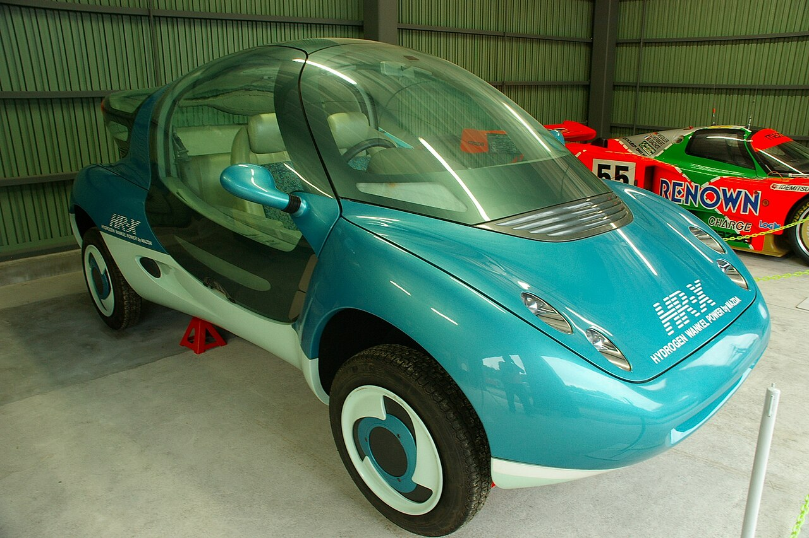

O ponto de partida moderno da combustão a hidrogênio. Este conceito foi projetado com um motor rotativo Wankel de dois rotores, provando na prática que a arquitetura rotativa é ideal para o gás, pois separa fisicamente a zona de admissão da zona de queima, eliminando o risco de pré-detonação (backfire).